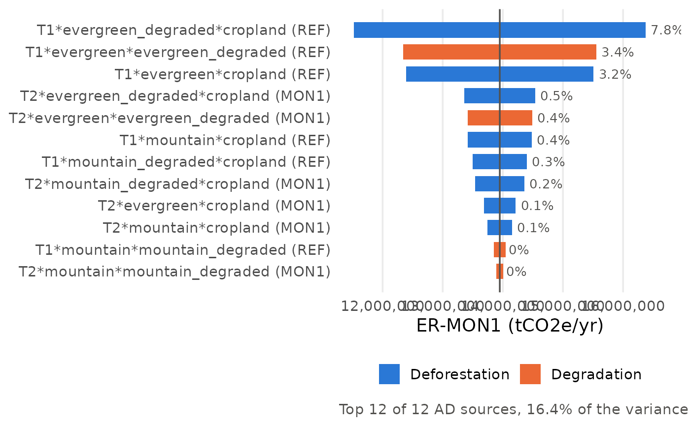

Sensitivity analysis of REDD+ emissions and emission reductions (delta method)
Source:R/fct_sensitivity2.R
fct_sensitivity2.RdSensitivity of the reference level, monitoring emissions and emission
reductions to the independent model inputs (activity data, carbon elements,
carbon fraction, degradation ratios), with the same model as the Monte Carlo
chain (fct_combine_mcs_E(), fct_combine_mcs_P(),
fct_combine_mcs_ER()): carbon elements are shared by all transitions of
a land use, and EF = C_i - C_f.
Delta method: for independent inputs and a first-order expansion, \(Var(Y) \approx \sum_i (\partial Y / \partial X_i)^2 \sigma_i^2\). The share \((\partial Y / \partial X_i \cdot \sigma_i)^2 / Var(Y)\) is the first-order Sobol index of input \(i\). Shares are summed by input group, and by input type: activity data (AD) vs emission factors (EF: carbon stocks, carbon fraction, degradation ratios). The AD x EF interaction is second order and not included.
The AD tornado swings each AD source across \(mean \pm z \cdot se\), all other inputs at their mean. Outputs are linear in each AD, so the swing is exact and the AD shares add up to the AD group share.
Arguments
- .checked_data
The list returned by
fct_checkinput().
Value
A list with:
outputs (mean, delta-method se and U\
variance (share of variance per output, input type and group, in \
ad_tornado (one row per output and AD source: low / high output value,
swing and share of variance, sorted by swing),
split (emissions per period type and REDD+ activity, with uncertainty)
and gg_variance (stacked bar chart of the variance shares).
Outputs are named as in the app: reference type (e.g. "REF"), "E-
Examples
path <- system.file("extdata/mocaredd-templatev2-simple.xlsx", package = "mocaredd")
checked <- fct_checkinput(.path = path)
#> Loading data... - progress: 0%.
#> ✓ Tables loaded successfully from template v2
#> Checking column names... - progress: 14%.
#> ✓ Column names: all required columns present
#> Checking table dimensions... - progress: 29%.
#> ✓ Table sizes: all tables have sufficient rows
#> Checking column data types... - progress: 43%.
#> ✓ Data types: all columns have correct data types
#> Checking category values... - progress: 57%.
#> ✓ Category values: all categories are valid
#> Checking unique IDs... - progress: 71%.
#> ✓ Unique IDs: no duplicates or missing IDs found
#> Checking cross-table and intra_table consistency... - progress: 86%.
#> ✓ Cross-table consistency: all references match
#> -- All checks passed.
sa <- fct_sensitivity2(.checked_data = checked)
sa$variance
#> # A tibble: 12 × 4
#> output input_type group contribution_pct
#> <chr> <chr> <chr> <dbl>
#> 1 REF EF Carbon stock 43.3
#> 2 REF EF Degradation ratio 48.9
#> 3 REF AD Activity data 7.20
#> 4 REF EF Carbon fraction 0.624
#> 5 E-MON1 EF Carbon stock 38.2
#> 6 E-MON1 EF Degradation ratio 56.3
#> 7 E-MON1 AD Activity data 4.84
#> 8 E-MON1 EF Carbon fraction 0.682
#> 9 ER-MON1 EF Carbon stock 42.3
#> 10 ER-MON1 EF Degradation ratio 40.8
#> 11 ER-MON1 AD Activity data 16.4
#> 12 ER-MON1 EF Carbon fraction 0.536
fct_tornado(sa$ad_tornado, .output = "ER-MON1")
